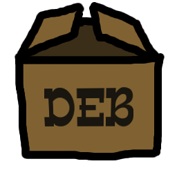
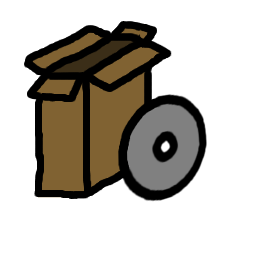

|
Jak zainstalować Chivy?
Z paczki DEB (Ubuntu/Debian)
- Pobież paczkę DEB: 
- Otwórz ją
- Kliknij „Zainstaluj pakiet”
- Jeżeli nie można zainstalować pakietu (niespełnione zależności), to włącz źródła „universe” (System ⇝ Administracja ⇝ Źródła oprogramowania ⇝ Oprogramowanie Open Source utrzymywane przez społeczność (universe) )
- Wpisz hasło administratora
- Uruchom grę: Programy ⇝ Gry ⇝ (Zręcznościowe ⇝) Chivy
Za pomocą instalatora (Windows)
- Pobierz instalator: 
- Uruchom go
- Kliknij „Install”
- Kliknij „Close”
- Uruchom grę: Menu Start ⇝ Programy ⇝ Chivy ⇝ Chivy
Z pythonowego pliku .egg (Cokolwiek, co ma pythona)
- Zainstaluj pythona 2.6: www.python.org
- Zainstaluj setuptools: http://pypi.python.org/pypi/setuptools
- Pobierz plik .egg:
- Uruchom skrypt „easy_install.py” z plikiem .egg (może wymagać uprawnień administratora)
- Uruchom grę: „python -m chivy”
|
|